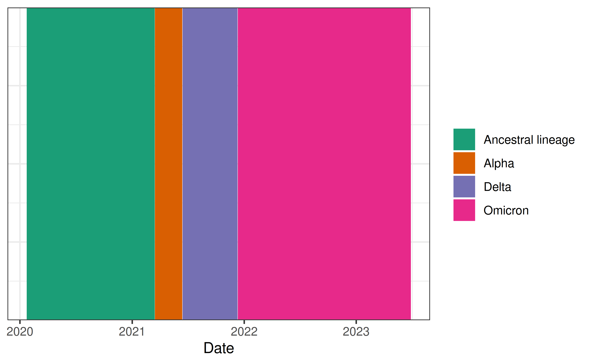

library(rtestim)
library(ggplot2)
library(dplyr)
library(nnet)
library(forcats)
library(tidyr)
library(Matrix)
theme_set(theme_bw())This package accommodates 3 different ways of specifying a delay distribution in the renewal equation, and this vignette illustrates these in turn. The renewal equation specifies that the expected incidence at time \(t\) is a weighted sum of previous incidence, multiplied by \(R_t\): \[\begin{equation} \mathbb{E}[I_t \mid I_1,\ldots,I_{t-1}] = R_t \sum_{a=0}^t w_a I_{t-a}, \end{equation}\] calculated by convolving the preceding \(a\) days of new infections with the discretized generation (or serial) interval distribution \(w\) of length \(t\). It is the allowable distributions \(\{w\}_{a=0}^n\) that are the focus.
Discretization
First, it is important to recognize that the sequence \(\{w\}_{a=0}^n\) is usually a discretization of a probability density function, most frequently gamma or Weibull. This is because observed incidence happens at discrete time points like days or weeks, while time is continuous. Using the default (parametric) delay distributions requires calculating a discrete approximation.
Default (parametric) delay distribution
By default, estimate_rt() uses a gamma distribution
parameterized by the shape \(k\) and
scale \(\theta\). This density has pdf
\[
f_W(w) = \frac{1}{\Gamma(k)\theta^k} w^{k-1} e^{-w/\theta} I(w > 0),
\] where \(I\) is the indicator
function. The mean of this distribution is \(k\theta\), and the variance is \(k\theta^2\). Both \(k\) and \(\theta\) must be greater than 0. The figure
below shows a few examples densities from this family.
The default is the orange curve shown above. Given an incidence
sequence of length \(n\), internally,
delay_calculator() creates \(\{w\}_{a=0}^n\) by \[
w_a = F(a + 1) - F(a - 1),
\] and then renormalizing with w / sum(w) to ensure
that it sums to 1. Here, \(F\) is the
cumulative distribution function for Gamma (though similar works for any
continuous distribution). Note that this formula assumes that the
probability of a 0 delay is not 0. This is related to the
phenomenon of “double interval censoring”: a primary infection on day
\(t\) may have occurred any time
between 0:00 and 23:59 and the same for a secondary infection on day
\(t+1\). So even if the gap in reported
days is only “1 day”, those infections may have happened as little as a
few minutes apart, or as much as 48 hours apart.
When using this default, the delay distribution is necessarily
assumed to be the same for all \(t\),
and we compute the convolution of w and I with
the Fast Fourier Transform.
Just to illustrate this behaviour, we show the results for the
default setting on the included cancovid data.
can_default <- estimate_rt(cancovid$incident_cases, x = cancovid$date, nsol = 20L)
plot(can_default) + coord_cartesian(ylim = c(0.5, 2))
Constant, non-parametric delay distribution
If we don’t believe that the Gamma distribution closely approximates the serial interval distribution, then we can specify our own distribution manually. For example, Backer et al., Table S1 gives observed serial intervals for the Omicron (SGTF) and Delta (non-SGTF) COVID-19 variants during 2 weeks in 2021 in the Netherlands. For the sake of illustration, we aggregate these together and use this as our (constant) delay distribution.
# Data from Backer et al.
delay <- read.csv("backer.csv") |>
filter(delay >= 0) |>
select(-delay)
delay <- rowSums(delay)
delay <- delay / sum(delay)
This distribution looks something like a gamma, but it has finite support. We can easily use it instead.
can_nonpar <- estimate_rt(
cancovid$incident_cases,
x = cancovid$date,
delay_distn = delay,
nsol = 20L)
plot(can_nonpar) + coord_cartesian(ylim = c(0.5, 2))
The result is much less dramatic than the previous version. This is likely because the distribution is much more concentrated near short delays. We can see this by examining the two CDFs.

Time-varying delays
Finally, we also allow time-varying delay distributions. This is accomplished with a matrix. This requires a bit of work, but is not too challenging. For example, to create the correct matrix using the Baker et al. delays, the necessary code is the following.
# library(Matrix)
n <- nrow(cancovid)
backer_delay <- c(delay, rep(0, n - length(delay) - 1))
delay_mat <- matrix(0, n, n)
for (iter in 1:n) delay_mat[iter, 1:iter] <- rev(backer_delay[1:iter])
delay_mat <- drop0(as(delay_mat, "CsparseMatrix")) # make it sparse, not necessary
delay_mat <- delay_mat / rowSums(delay_mat) # renormalizeWe could then simply pass delay_mat to
estimate_rt(..., delay_distn = delay_mat). The result would
be the same as that shown above.
Variant-specific delays
For a more illustrative version of the previous example, we revisit the Canadian data, but combine it with some additional information.
We use variant circulation information from CoVaRR-Net’s Duotang notebook. For simplicity, the code for this processing is hidden in the fold.
# Run on 19 April 2024
duotang <- read_tsv("https://github.com/CoVaRR-NET/duotang/raw/main/data_needed/virusseq.metadata.csv.gz")
columnlist <- c(
"fasta_header_name", "province", "host_gender", "host_age_bin",
"sample_collection_date", "sample_collected_by",
"purpose_of_sampling", "purpose_of_sequencing", "lineage",
"raw_lineage", "gisaid_accession", "isolate"
)
unknown.str <- c(
"Undeclared", "Not Provided", "Restricted Access", "Missing",
"Not Applicable", "", "NA", "unknow"
)
duotang <- duotang |>
rename(province = geo_loc_name_state_province_territory) |>
select(all_of(columnlist))
meta <- duotang |>
mutate(
week = cut(sample_collection_date, "week"),
month = gsub("-..$", "", as.character(cut(sample_collection_date, "month")))
)
source("https://github.com/CoVaRR-NET/duotang/raw/main/scripts/scanlineages.R")
meta <- meta |>
mutate(gisaid_accession = str_replace(gisaid_accession, "EPI_ISL_", "")) |>
rename(GID = gisaid_accession) |>
rowwise() |>
mutate(raw_lineage = ifelse(
grepl("^X", raw_lineage),
str_replace_all(paste0(
realtorawlineage(substr(
raw_lineage, 1, str_locate(raw_lineage, "\\.") - 1
)),
".",
substr(raw_lineage, str_locate(raw_lineage, "\\.") + 1, nchar(raw_lineage))
), "[\r\n]", ""),
raw_lineage
)) |>
ungroup()
dico <- makepangolindico() # rebuild the lineage dictionary so the correct names gets assigned for XBB descedants not named XBB
VOCVOI <- read_csv("https://raw.githubusercontent.com/CoVaRR-NET/duotang/main/resources/vocvoi.csv")
meta$pango_group <- create.pango.group(VOCVOI, meta)
meta <- select(meta, province, week, pango_group) |>
mutate(week = as.Date(week))
counts <- group_by(meta, province, week, pango_group) |>
count() |>
ungroup() |>
arrange(province, week, pango_group)
can_counts <- group_by(meta, week, pango_group) |>
count() |>
ungroup() |>
arrange(week, pango_group) |>
mutate(province = "Canada")
counts <- bind_rows(can_counts, counts)
saveRDS(counts, "duotang-counts.rds")We smooth the raw data using multinomial logistic regression on a third order orthogonal polynomial to produce the following estimated variant proportions in Canada.
Using the estimated proportions, we label each date with the dominant variant at the time (and restrict ourselves to the time period of the included case data).

Creating delay distributions
We use the delay distribution data from the meta analysis in Xu, X., Wu, Y., Kummer, A.G. et al.. The raw data for their analysis is available on GitHub. We use a simple version of their procedure, taking the median calculations across studies to find the mean and standard deviation of the delay for each variant separately. Then we convert these to the \(k\) and \(\theta\) parameters for the gamma distribution. This analysis is hidden below the fold.
data_raw <- readxl::read_excel("xu-etal-DATA_RAW.xlsx") |>
select(type, para, n = Sample_size, mean, sd, se, median) |>
filter(!is.na(type)) |>
mutate(across(-c(type, para), as.numeric))
bonehead_meta <- data_raw |>
group_by(type, para) |>
mutate(
no_n = all(is.na(n)),
n = case_when(!is.na(n) ~ n, no_n ~ 1, TRUE ~ median(n, na.rm = TRUE))
) |>
ungroup() |>
mutate(
mean = case_when(!is.na(mean) ~ mean, TRUE ~ median),
sd = case_when(!is.na(sd) ~ sd, TRUE ~ se * sqrt(n))
) |>
group_by(type, para) |>
summarise(
mean = median(mean, na.rm = TRUE),
sd = median(sd, na.rm = TRUE),
.groups = "drop"
)
## There's only one Beta and only IP.
## We use the corresponding sd for Alpha IP,
## and duplicate Alpha for GT / ST
Beta_IP <- bonehead_meta |> filter(type == "Beta")
Beta_IP$sd = bonehead_meta |>
filter(type == "Alpha", para == "IP") |> pull(sd)
Beta <- bind_rows(
Beta_IP,
bonehead_meta |>
filter(type == "Alpha", para != "IP") |>
mutate(type = "Beta")
)
delay_dstns_byvar <- bonehead_meta |>
filter(type != "Beta") |>
bind_rows(Beta) |>
arrange(type, para) |>
mutate(shape = mean^2 / sd^2, scale = mean / shape)
saveRDS(delay_dstns_byvar, "delay-distns-byvar.rds")We’ll use just the Serial Intervals (SI), though the incubation periods (IP), and generation times (GT) are also available. Below, we visualize the estimated delays for the 4 variants that were most prevalent in Canada.

We use these delays during the period they were most prevalent to estimate Rt. First, we build the delay matrix.
n <- nrow(cancovid)
delay_mat <- matrix(0, n, n)
for (iter in 1:n) {
current_var <- can_pred_class$var[iter]
current_pars <- delay_dstns_can |> filter(type == current_var)
delay <- discretize_gamma(0:(iter - 1), current_pars$shape, current_pars$scale)
delay_mat[iter, 1:iter] <- rev(delay)
}
delay_mat <- drop0(as(delay_mat, "CsparseMatrix")) # make it sparse, not necessary
delay_mat <- delay_mat / rowSums(delay_mat) # renormalizeFinally, we use this time-varying delay matrix to estimate Rt.
can_tvar <- estimate_rt(
cancovid$incident_cases,
x = cancovid$date,
delay_distn = delay_mat,
nsol = 20L)
plot(can_tvar) + coord_cartesian(ylim = c(0.5, 2))